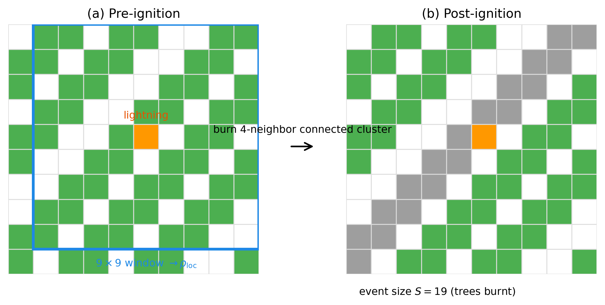

inquiries
-
01+
Physics · Nonlinear Dynamics
If you change the shape of gravity, does chaos follow?
On what happens to a double pendulum when "downward" is no longer constant — and on what that reveals about the assumptions quietly built into every physical model.
The double pendulum is the standard demonstration of classical chaos: two linked rods, deterministic equations, and behaviour so sensitive to initial conditions that prediction becomes practically impossible within seconds. What almost every analysis of it shares is an assumption treated as completely obvious — that gravity is uniform and constant. This project asked what happens if you drop that assumption.
The results were not what a naive intuition predicts. Introducing a vertical gravity gradient — gravity that grows or weakens with height — didn't simply increase or decrease chaos. It changed which configurations were chaotic at all. Initial conditions that produced full chaos under uniform gravity became quasi-periodic under the gradient. The relationship was non-monotonic: increasing the gradient further reversed the effect. The gravity field geometry was acting as a hidden control parameter for chaos, one the standard model cannot see.
The black hole case made the underlying logic clearest. When the pivot was placed close to a compact object, the pendulum links were comparable in length to the orbital distance — the field was genuinely nonuniform across the system. For a Sun-mass or Sagittarius A* case at the same relative distance, the links were vanishingly small, and the field appeared effectively uniform. What determined the physics wasn't the exotic mass of the object. It was the dimensionless ratio of pendulum size to distance from the source. The lesson turned out to be geometric, not astrophysical.
The deeper point — the one that motivated the project — is that the "uniform gravity" assumption isn't a neutral simplification. It pre-determines what behaviour you're allowed to find. That's not unique to pendulums.
Read full essay →field notes
Status
Complete · 2025
Methods
Key result
Linear gravity gradient reduced dimensionless FTLE from λ* = 0.079 to 0.021 — a 3–4× suppression, non-monotonically dependent on gradient sign and magnitude.
Gravity models
Uniform · Linear gradient · Pseudo-Newtonian (Earth, Sun, Sgr A*)
-
02+
Environment · Geospatial
What Happens When a Forest Dataset Meets a Mangrove?
On comparing two satellite datasets in Mumbai — and on what disagreement reveals about classification systems struggling with intertidal edges.
A mangrove is obviously a forest until you ask a global dataset to prove it every year. Then the answer becomes strangely unstable. Two open-access satellite products, both widely used, look at Mumbai's coastal wetlands and tell slightly different stories. That disagreement is where the science gets interesting — not because the datasets are wrong, but because their mismatches force you to ask what exactly "forest" means when you're looking through a specific sensor at a specific threshold.
The deeper point is that a map is never a neutral mirror. It is a compressed bundle of sensor choices, classification rules, thresholds, and assumptions about what counts as evidence. In a landscape like Mumbai's mangroves — muddy, intertidal, fragmented — those choices matter operationally. A generic forest product can look persuasive while being unstable in exactly the environment where environmental planners most need to trust it.
 Read full essay →
Read full essay →
field notes
Status
Complete · 2025
Methods
Key finding
0% persistent forest — classification flickering in intertidal zone reveals sensor instability, not ecosystem collapse.
-
03+
Infrastructure · Simulation
Can geometry substitute for infrastructure in a disaster?
On placing wireless drones over broken terrain — and on what optimal coverage actually means when the terrain itself is the obstacle.
[Essay in progress]
field notes
Status
Ongoing · 2025
Methods
-
04+
Language · NLP
What does a language need before a machine can hear it?
On building speech recognition for a low-resource language — and on what 'low-resource' actually costs, technically and otherwise.
[Essay in progress]
field notes
Status
Ongoing · 2025
Methods
-
05+
Sports Analytics · ML
Where should a bowler bowl when the match is on the line?
On learning wicket probability from ball-tracking data — and on what 'optimal' means in a sport governed by context, not statistics.
[Essay in progress]
field notes
Status
Ongoing · 2025
Methods
Data
IPL Hawkeye ball-tracking
-
06+
Astrophysics · ML
How do you find a planet by learning the shape of its absence?
On classifying exoplanet transit candidates from light curves — and on what it means to teach a model to recognise a shadow.
[Essay in progress]
field notes
Status
Ongoing · 2025
Methods
Data
Kepler · TESS light curves
-
07+
Finance · NLP
Does it matter who says buy — or only that they said it convincingly?
On extracting per-ticker sentiment from finance videos — and on the gap between someone having an opinion and that opinion being legible to a machine.
[Essay in progress]
field notes
Status
Ongoing · 2025
Methods
-
08+
Environment · Complex Systems
How Dense Does a Forest Have to Be Before a Spark Matters?
On local connectivity thresholds in forest-fire models — and on why the geography of ignition points matters more than global forest density.
Most ignitions do almost nothing. A spark lands, a few trees burn, and the event is over before it becomes an event at all. The question is: when does that change? When does a random ignition stop being local bad luck and start accessing enough connected fuel to become a genuinely large burn?
Using the Drossel–Schwabl forest-fire model, this project isolates a single mechanism: local connectivity at the point of ignition. The model is deceptively simple — a square lattice, trees regrowing at random, fire propagating through connected clusters — but that simplification strips the problem down to its essence. What emerges is a reproducible threshold, located where local tree density reaches roughly 61%. Below that, burns stay small. Above it, the ignition site sits inside a connected fuel network that can support catastrophically larger events.
The deeper lesson is about what mechanisms actually matter in fire ecology. Global density influences what local environments are available, but the real action is local. A fire becomes large not because the forest is vaguely full on average, but because the spark happened to land in the wrong place — where connectivity had already crossed a threshold.

Read full essay →field notes
Status
Complete · 2025
Methods
Key result
Local connectivity threshold ρ_loc* ≈ 0.61 (≈49 trees in 9×9 window) is stable across parameter sweeps; post-threshold fire severity scales with regrowth opportunity.